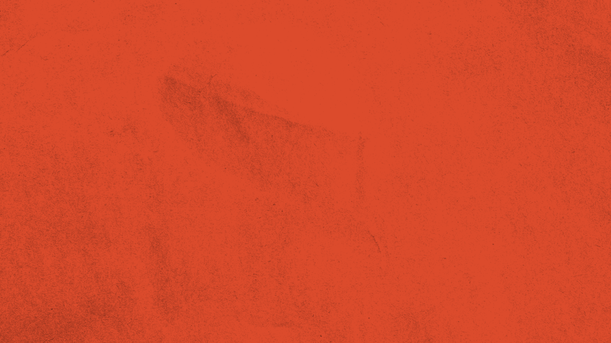
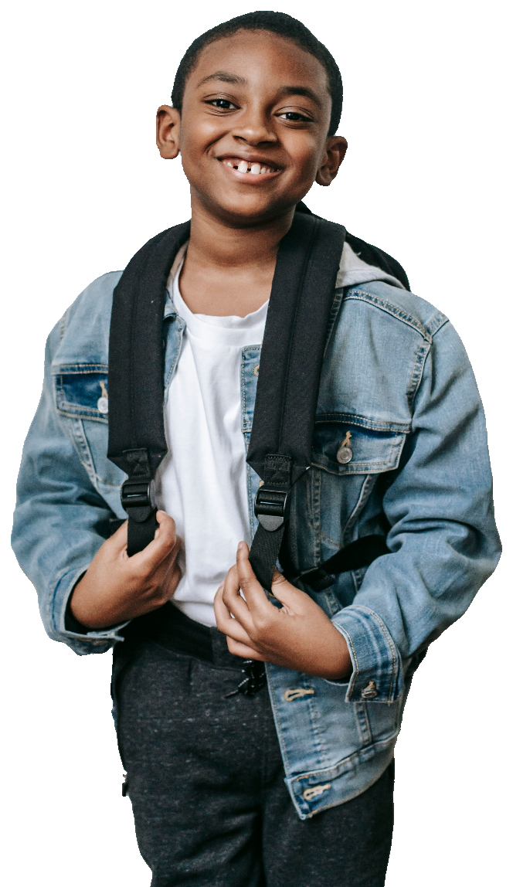
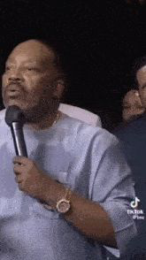
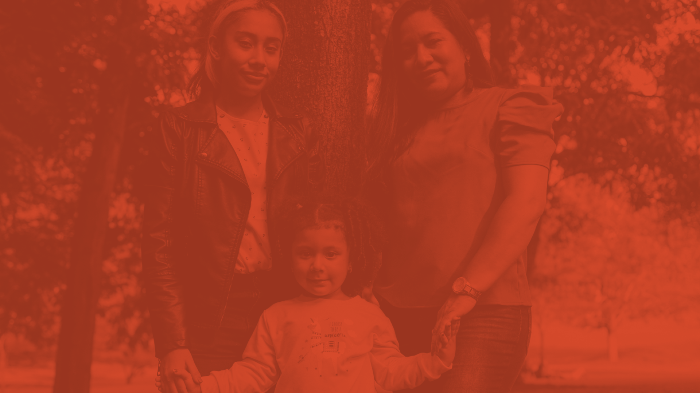

Engaged SpacesNCC Confluence 2025
balcony
balcony

Taking a Balcony View
Dana Mitchell, Engaged Spaces
Tuesday, June 10, 2025
Tuesday, June 10, 2025
Engaged SpacesTaking a Balcony View
settle in.
settle in.
01Take a breath. You made it!
02Create your name tent: name, pronouns, and a picture, word, or phrase that speaks to who you are outside of work.
03Open your engagement form and complete the first two prompts: name, pronouns, how you're feeling.
04Flip through your workbook.
scan for your engagement form
Engaged SpacesTaking a Balcony View
hello.
hello.
Dana Mitchell(she/her)
wife
mama
educator
thespian
foodie / home chef
sibling
human being
Engaged Spaces · DEIB-centered community and professional development
Engaged Spaces
Taking a Balcony View
rooted
rooted
in community
Explore how to center community voice as we iterate, design, revise, and build together.
rising
rising
in power
Explore how to increase and / or leverage our individual and collective power by refining how we see things.
Engaged SpacesTaking a Balcony View
who's it for?
who's it for?
Beneficiaries
You'll likely benefit if you…
are human
make decisions, solve problems, and regularly interact with teams (like your family)
desire to see liberation and equity reflected in how you build with your community
want to divorce yourself from systems of oppression
Stickies
This may feel sticky if you…
often lean into the convenience of privilege
settle for your own freedoms at the cost of others' liberation
quietly believe a savior is coming to disrupt the system
are buckling because of the overwhelming impact of white supremacy culture
Engaged SpacesTaking a Balcony View
how we move
how we move
Not a savior, nor expert; we all have value to add.
Everything shared is an offering.
Take what is offered through your lens / your role(s).
Workbook: it's yours. Mark it up!
Engagement form: linked slide deck, a notecatcher, some optional prompts.
Don't submit until the end of the session. I'll tell you when!
Lean into authenticity.
Engaged SpacesTaking a Balcony View
today
today
Objectives
01Deepen our understanding of the Taking a Balcony View (TABV) practice
02Reflect on the importance of gathering and analyzing qualitative, quantitative, and experiential data in equity-minded work
03Practice the TABV process
Agenda · 63 minutes
15m
8m
25m
15m
Literature-based discussion
Independent reading
TABV practice + exploration
Intentional next step planning / closing
We'll move as the room needs with this schedule in mind. This session is a sample.
Engaged SpacesTaking a Balcony View
listen.
listen.
Nikki-Rosa
by Nikki Giovanni
Engaged SpacesTaking a Balcony View
our lenses
our lenses
01Each of us has a lens.
02Our lenses have strengths and create biases.
03Our lenses are fashioned by our identity markers and lived experiences.
04Shared identity often leads to the proper interpretation.
05Our lenses are inclined to make misinterpretations.
06Lenses attached to privilege are even more inclined to devalue and misname someone's lived experiences.
Engaged SpacesTaking a Balcony View
what is taking a balcony view?
7–8 minIndependent reading, pages 4–6
2–3 minResponding, page 6
What feels affirming about the TABV practice? What feels aligned to your values and role-specific priorities?
How might not taking a balcony view impact a project, partnership, relationship, and / or community?
Optional: any additional reflections or wonderings?
Engaged SpacesTaking a Balcony View
scan
scan
Open your engagement form.
Engaged SpacesTaking a Balcony View
close
the doors.
the doors.
close
the doors.
the doors.


Engaged SpacesTaking a Balcony View
thank you.
thank you.
Dana Mitchell
dana@engagedspaces.com240-688-8718@thedanamitchell on IG
Professional Development
Educator DevelopmentLeaders + teachers · Instructional development + support for all staff
DEIB FacilitationFacilitated conversations for all stakeholders · Strategic planning